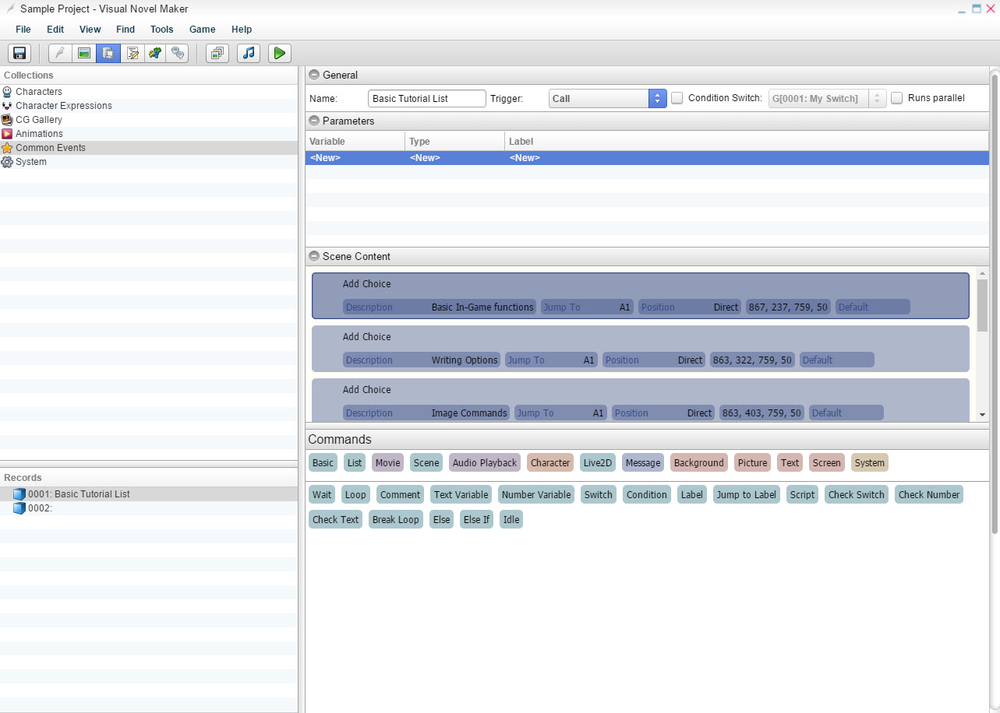

通用

名称
- 通用事件的名称。触发
- 运行通用事件
的条件。调用
- 如果您使用“调用通用事件”场景命令，则该通用事件将运行。自动
- 通用事件将自动激活。它将停止所有进程，除非勾选了“运行并行”。条件
开关- 使用开关作为条件来运行通用事件。
运行并行
- 也称为异步。如果选中“并行”，它将允许当前场景在运行通用事件的同时继续播放。自动
预加载 - 确定通用事件是否由资源预加载器处理。这仅适用于触发设置为“自动”的通用事件。如果选中，则预加载该通用事件中使用的所有资源。这对于自动/并行通用事件非常有用，因为它们从不通过场景调用，这是告诉资源预加载器在启动时预加载已用资源的唯一方法。请记住，如果您有大量带有“自动预加载”的自动/并行通用事件，则这些通用事件使用的所有资源将在启动时加载并且永远不会释放，这可能会消耗大量内存。
单一实例
- 确定一次只能存在一个该通用事件的实例。如果未选中，每次调用通用事件都会产生一个带有自己命令解释器和自己局部变量的新实例。这对于并行调用或递归很有用。内联- 如果选中，引擎会尝试通过将其命令复制并粘贴到调用者的命令列表中来优化对该通用事件的调用，以加快执行速度。如果一个通用事件被调用非常频繁，例如在循环中调用 1000 或 10000 次，这将非常有用。如果触发设置为“自动”或通用事件有参数或使用递归（调用自身），则它无效。
参数参数允许您定义一些值，如数字、文本等来触发通用事件。如果您想要一个示例，可以查看
技巧与窍门页面。
名称- 在自动生成的 UI 窗口中显示的参数名称。
数字- 将数值或 ID 插入数字变量。
列表条目
- 用户定义的列表。每个列表条目都是名称：数值对。选定条目的数值存储在数字变量中。
开关- 将开关值插入开关变量。文本